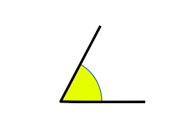
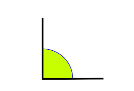
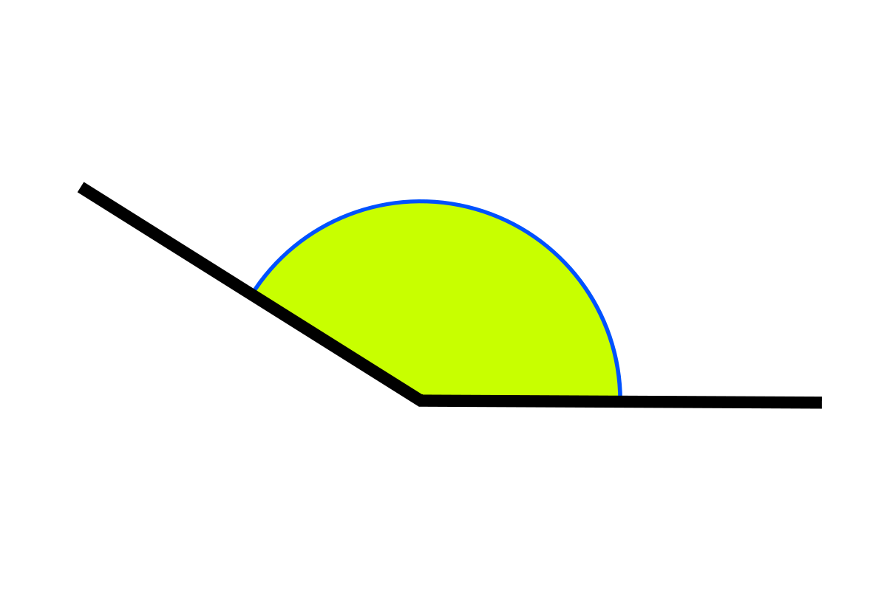
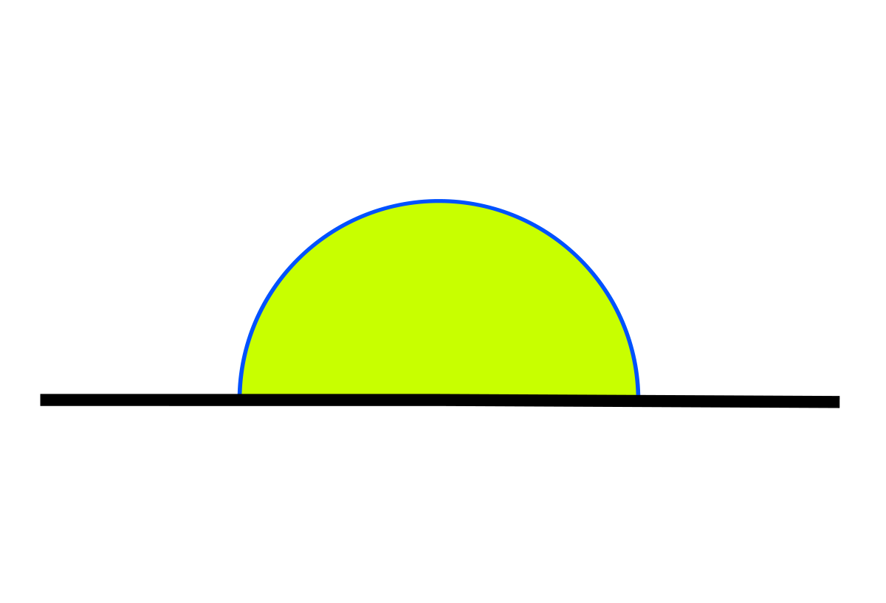

Un ángulo es la porción del plano comprendida entre dos semirrectas que tienen un origen común. La unidad de medida de los ángulos son los grados. Pueden estar definidos sobre superficies planas (trigonometría plana) o curvas (trigonometría estética).
Existen diferentes tipos de ángulos según la medida de su amplitud, es decir, la rotación de uno de sus lados o líneas de una posición a otra, la cual es medida en grados por medio de un instrumento de medición conocido como transportador. Los tipos de ángulos son estudiados por la geometría. Los principales tipos de ángulos son los siguientes:
Ángulo Agudo: Es aquel cuya inclinación es mayor a 0° y menor a 90°, sin incluir esta última medida. Por ejemplo, un cono de helado forma un ángulo agudo o un triángulo isosceles.

Ángulo Recto: Se denomina como ángulo recto a aquel cuya amplitud mide 90° partiendo desde el mismo vértice, por tanto, sus lados son perpendiculares. Por ejemplo, cada uno de los lados de un cuadrado forma un ángulo recto o un triángulo rectángulo.

Ángulo Obtuso: Es aquel cuya amplitud es mayor a 90° y menor a 180°, sin incluir las medidas mencionadas. Por ejemplo, la apertura de un abanico genera un ángulo obtuso o un triángulo obtusángulo.
Ángulo Llano: Se denomina como ángulo llano a aquel cuya medida de amplitud es de 180°. Este ángulo posee una característica en particular, y es que sus dos líneas se unen desde el vértice formando una prolongación en forma de línea recta. 

Hay otro tipo de ángulos como lo son:
- Ángulo Cóncavo
- Ángulo Completo